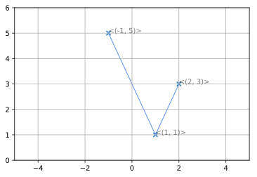
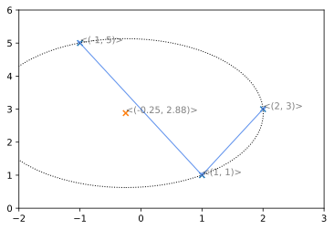
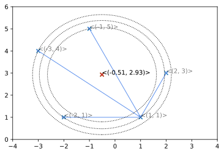

Sphere fitting - Demystified (and an algorithm)
tldr: gimme the algorithm
Introduction
The need to find a line that connects a set of points is a common problem in data science. Perhaps the most common and simplest of these is the special case of Linear Regression with two known values.
$$\begin{document}
f(x) = mx+c : f(x) \rightarrow y\\
x_0\rightarrow x : f(x)\rightarrow y_0 \\
x_1\rightarrow x : f(x)\rightarrow y_1 \\
$$
Given points \((1,3) \rightarrow (x_0, y_0) : (2,5) \rightarrow (x_1, y_1)\) we need to find the values of \(m\) and \(c\) that, when plugged into \(f(x)\), maps \(f(x_0)\) to \(y_0\) and \(f(x_1)\) to \(y_1\)
$$\begin{document}
1 \rightarrow x_0 : f(x_0) \rightarrow y_0 \rightarrow 3\
2 \rightarrow x_1 : f(x_0) \rightarrow y_1 \rightarrow 5\
m \leftarrow \dfrac{|x_1-x_0|}{|y_1-y_0|} \leftarrow 2 : c \leftarrow y_0 - mx_0 \leftarrow 1
$$
import numpy as np
import matplotlib.pyplot as plt
def mark_point(ax, p, annotation=None):
if annotation == None:
annotation = str(p)
_ = ax.annotate(annotation, p)
_ = ax.plot([0,p[0]],[p[1], p[1]], color='blue', linestyle=':')
_ = ax.plot([p[0], p[0]],[p[1], 0], color='blue', linestyle=':')
X = [(1,3), (2,5)]
xn,yn = zip(*X)
p = np.polyfit(xn,yn,1)
x = np.linspace(0,10,11)
y = np.polyval(p,x)
fig = plt.figure()
ax = fig.add_subplot(111)
_ = ax.grid(b=True)
_ = ax.set_xlim([0,4])
_ = ax.set_ylim([0,7])
mark_point(ax, X[0])
mark_point(ax, X[1])
_ = ax.plot(x, y , marker='o')
A more involved case is finding the function that maps a circle onto a set of points. There are several equations for a circle, depending on how you think of the circle.
The most general equation for the circle is
Algorithm for the general case of fitting a set of points to an n-sphere
An n-what?
An n-sphere is the generalisation of the ordinary spheres to higher dimensional spaces.
An n-sphere is a twiddler where the points on the surface are the same distance \(r\) from a central point \(p\), the centre point of the sphere.
A circle is a 1-sphere and the standard sphere (ball) is a 2-sphere. This can be a source of confusion, an n-sphere is usually represented (the technical term is embedded) in an \(n+1\) dimensional space. A circle (1-sphere) is embedded in 2 dimensions, a sphere (2-sphere) is embedded in 3 dimensions and so on.
A unique n-sphere in a \(n+1\) embedding can be derived with \(n+2\) points. So:
* a unique circle (1-sphere) passes through 3 points in a 2 dimensional embedding.
* a unique sphere (2-sphere) passes through 4 points in a 3 dimensional embedding.
The algorthms above work fine for 2 and 3 dimensions, but become unwieldy at higher dimensions. What is needed is a general algorthm that takes \(n\)points and fits an \((n-2)\)-sphere to them.
Of course, there is nothing stopping an n sphere being embedded in higher than n+1 dimensions, but this will have to be catered for in the algorithm for reasons that will be explained.
Let P be the set of points \((1,1) : (2,3) : (-1,5)\)
$$
P \leftarrow
\begin{pmatrix}
1&2&-1\\
1&3&5\\
\end{pmatrix}
\\
$$
Find the vectors from one of the points \(P_0\), to all the others \(P_1 ... P_n\) (\(P_0\) could be any of the points, but I've used the first point for convenience)
$$
P_0 \leftarrow
\begin{pmatrix}
1\\
1\\
\end{pmatrix}\\
$$
$$
P \leftarrow
\begin{pmatrix}
2&-1\\
3&5\\
\end{pmatrix}\\
$$
$$
V \leftarrow P-P_0 \\
V =
\begin{pmatrix}
1&-2\\
2&4\\
\end{pmatrix}\\
$$
Calculate the unit vectors \(U_n\) directed along \(V_n\) from \(P_0\)
$$
U_n \leftarrow \dfrac{V_n}{|V_n|}\
U =
\begin{pmatrix}
0.447&-0.447\\
0.894&0.894\\
\end{pmatrix}
\
\($
Define the vector $R\) as the vector from \(P_0\) to the centre point of the n-sphere.
The projection of \(R\) onto \(U_n\) is the dot product of \(R\) and \(U_n\) and has length \(\dfrac{|V_n|}{2}\)
Declare a matrix \(W : W_n \leftarrow \dfrac{|V_n|}{2}\)
$$
U^T . R = W \\
R = (U^T)^{-1}W \\
R = \begin{pmatrix}
0.447&0.894\\
-0.447&0.894\\
\end{pmatrix}^{-1}
\begin{pmatrix}
1.118\\
2.236\\
\end{pmatrix}
$$
$$
R = \begin{pmatrix}
1.119&-1.119\\
0.559&0.559\\
\end{pmatrix}
\begin{pmatrix}
1.118\\
2.236\\
\end{pmatrix}
=\begin{pmatrix}
-1.251\\
1.876\\
\end{pmatrix}
$$
The centre of the circle is then simply:
$$
R+P_0 = \begin{pmatrix}
-1.251\\
1.876\\
\end{pmatrix} + \begin{pmatrix}
1\\
1\\
\end{pmatrix} = \begin{pmatrix}
-0.251\\
2.876\\
\end{pmatrix}
$$
import numpy as np
from numpy import linalg as LA
import matplotlib.pyplot as plt
import matplotlib.patches as mpatches
from matplotlib.collections import PatchCollection
def arrow(ax, p, v):
_off = np.array((0,0))
ax.arrow(p[0], p[1], v[0], v[1], head_width=.05, color='cornflowerblue')
#ax.annotate("{0}".format(tuple(v)), v+_off, alpha=.5)
def annotate_points(ax, P):
x,y = zip(*P)
ax.scatter(x,y, marker='x')
for p in P:
ax.annotate("<{0}>".format(tuple(p)), p, alpha=.5)
def condition(m):
return np.array(list(m))
def build_vector(p,q):
if len(p.shape) > 1:
return condition(
map(lambda _p: build_vector(_p,q), p)
)
if len(q.shape) > 1:
return condition(
map(lambda _q: build_vector(p,_q), q)
)
return q-p
def draw_vector(ax, p, q):
#vector from p to q
p , q = np.array(p) , np.array(q)
if len(p.shape) == 1:
np.reshape(p, (p.shape[0],1))
V = build_vector(p,q)
arrow(ax, p, p-p)
for v in V:
arrow(ax, p, v)
def show_points(ax, P):
annotate_points(ax, P)
p_0 = np.array(P[0,:])
P = P[1:,:]
draw_vector(ax,p_0,P)
fig = plt.figure()
ax = fig.add_subplot(111)
P = np.array([(1,1),(2,3),(-1,5)])
show_points(ax, P)
ax.set_xlim([-5,5])
ax.set_ylim([0,6])
ax.grid()
#draw_vector(ax,p_0, P)

The Algorithm
The standard way of representing a matrix of vectors \(V_n\) is in the form:
$$
V \leftarrow
\begin{pmatrix}
v_0&v_1&...&v_n\\
\end{pmatrix}
$$
where each column of the matrix represents each vector.
Numpy, on the other hand, defaults to placing the vectors as the rows.
For this reason the algorithm below doesn't find the inverse of \(U^T\), it finds the inverse of \(U\).
import numpy as np
from numpy import linalg as LA
def nsphere_fit(P):
P = np.array(P)
a,b = P.shape
p_0 = P[0]
P = P[1:,:]
V = P-p_0
N = .5*LA.norm(V, axis=1)
U = list(map(lambda v,n: v/(2*n), V, N))
return (LA.pinv(U) @ N)+p_0 # Using pseudo inverse, see note below
Pseudo Inverse
Observant viewers will notice the use of the pseudo inverse. When using the basic algorithm, the inverse is used. The matrix \(U\) therefore is necessarily square, as only square matrices have true inverses.
When fitting an n-sphere to a greater than \(n+1\) dimensional embedding, or when fitting an n-sphere to more than \(n+2\) points the matrix \(U\) will be non-square.
It is a valid operation to fit a circle to 3 points in a 3 dimensional space, but doing so would mean U would be a 3 by 2 matrix.
For the points:
\((1,1,1) : (2,-2,-2) : (3,4,-4)\)
$$
P \leftarrow
\begin{pmatrix}
1&2&3\\
1&-2&4\\
1&-2&-4\\
\end{pmatrix}
$$
$$
V \leftarrow P_{1...n} - P_0 \\
V =
\begin{pmatrix}
1&2\\
-3&3\\
-3&-3\\
\end{pmatrix}
$$
Testing
Testing on a circle (1-sphere) with a 2-D Embedding
def draw_circle(ax, Q, r):
annotate_points(ax, [Q])
c = plt.Circle(Q, r, linestyle=":", fill=False)
ax.add_artist(c)
P = np.array([(1,1),(2,3),(-1,5)])
#fig,ax = plt.subplots()
fig = plt.figure()
ax = fig.add_subplot(111)
show_points(ax, P)
ax.set_xlim((-2,3))
ax.set_ylim((0,6))
Q = nsphere_fit(P) # Q is centre point
r = LA.norm(P-Q, axis=1)
assert(np.isclose(min(r),max(r))) # sphere, so distance, r, from Q to P[0...n] equal
draw_circle(ax, np.round(Q,2), min(r))
print('Centre of circle {0}'.format(np.round(Q,2)))
print(r)
Centre of circle [-0.25 2.88]
[2.25346955 2.25346955 2.25346955]

P = np.array([(1,1),(2,3),(-1,5),(-3,4),(-2,1)])
#fig,ax = plt.subplots()
fig = plt.figure()
ax = fig.add_subplot(111)
show_points(ax, P)
ax.set_xlim((-4,4))
ax.set_ylim((0,6))
Q = nsphere_fit(P) # Q is centre point
r = LA.norm(P-Q, axis=1)
print("r={0} min={1} mean={2} max={3}".format(r, min(r), np.mean(r), max(r)))
draw_circle(ax, np.round(Q,2), max(r))
draw_circle(ax, np.round(Q,2), np.mean(r))
draw_circle(ax, np.round(Q,2), min(r))
print('Centre of circle {0}'.format(np.round(Q,2)))
r=[2.44636872 2.50850066 2.13095828 2.71380957 2.437239 ] min=2.130958277782115 mean=2.447375243529411 max=2.7138095686422177
Centre of circle [-0.51 2.93]
